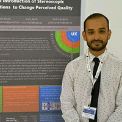

Below are detailed the mayor conferences and presentations I have done in the past.
Digital Media Industry and Academic Forum 2016
 Santorini, Greece
Santorini, Greece 8th International Conference on Quality of Multimedia Experience

 Lisbon, Portugal
Lisbon, Portugal
6 - 8 June 2016
Exploring the Introduction of Stereo Depth in Applications to Change Perceived Quality
4th International Conference on Communication, Media, Technology and Design
IEEE 3DUI Symposium 2015
 Arles, France
Arles, France
23 - 24 March 2015
Hacking HTML5 Canvas to Create a Stereo 3D Renderer
Presented a poster to the IEEE 3DUI conference. The poster can be seen here.
BEYOND SYMPOSIUM 2014: FUTURE DESIGN
 Karlsruhe, Germany
Karlsruhe, Germany
9 - 12 October 2014
Let's not bore Alice: Stereo 3D Applications
Presented a lecture about the use of 3D in applications. It can be seen here. Also, participated in two panels titled "Don't wait for the content to be produced, use what's there and design it for the future!" and "3D is dead, long live 3D".
 London, United Kingdom
London, United Kingdom  Guanacaste, Costa Rica
Guanacaste, Costa Rica  Istanbul, Turkey
Istanbul, Turkey